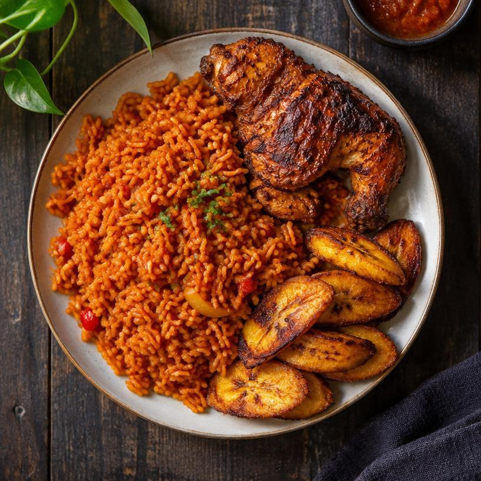
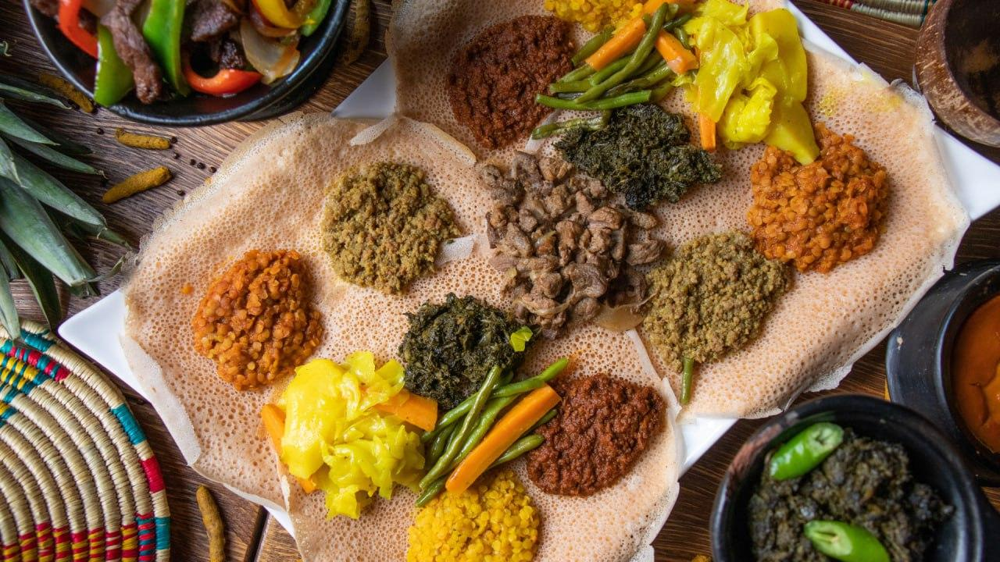
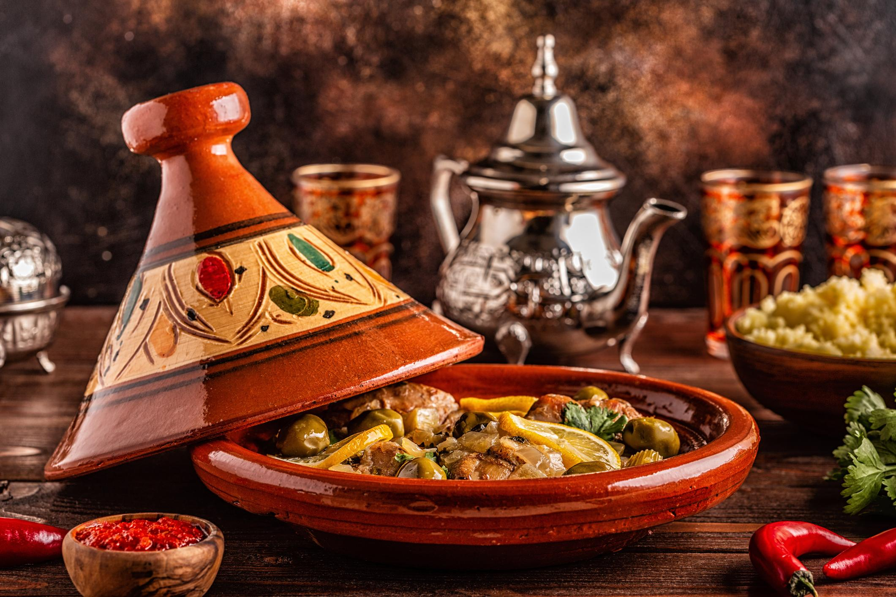

Explore African Culinary Regions
Africa has a rich food culture. Every region has its own traditional dishes, ingredients, and cooking methods. Let's explore some of them!
West Africa

West African food is known for its rich flavors, spices, and colorful meals. Rice, cassava, yams, tomatoes, and peppers are common ingredients.
Popular Foods
- Jollof Rice
- Fufu
- Egusi Soup
Cooking Techniques
Popular techniques include boiling, frying, grilling, and slow cooking. Many dishes use flavorful tomato and pepper sauces.
Jollof rice is one of the most popular dishes in West Africa and is enjoyed at celebrations.
Explore our Jollof Rice recipeLearn More
East Africa

East African cuisine includes a variety of grains, vegetables, meat, and spices. Common ingredients include maize, beans, bananas, and teff.
Popular Foods
- Injera
- Ugali
- Nyama Choma
- Isombe
Cooking Techniques
Foods are commonly steamed, boiled, grilled, and fermented. Fermentation is used to prepare traditional injera.
Injera is a traditional Ethiopian flatbread made using teff flour.
Explore our Injera recipeLearn More
North Africa

North African cuisine is famous for its aromatic spices, couscous, olive oil, vegetables, and slow-cooked meals.
Popular Foods
- Moroccan Tagine
- Couscous
- Harira Soup
Cooking Techniques
Slow cooking, steaming, roasting, and grilling are common techniques. Spices such as cumin, cinnamon, ginger, and turmeric add rich flavors.
Tagine is a famous Moroccan dish traditionally cooked slowly in a special clay pot.
Explore our Tagine recipe